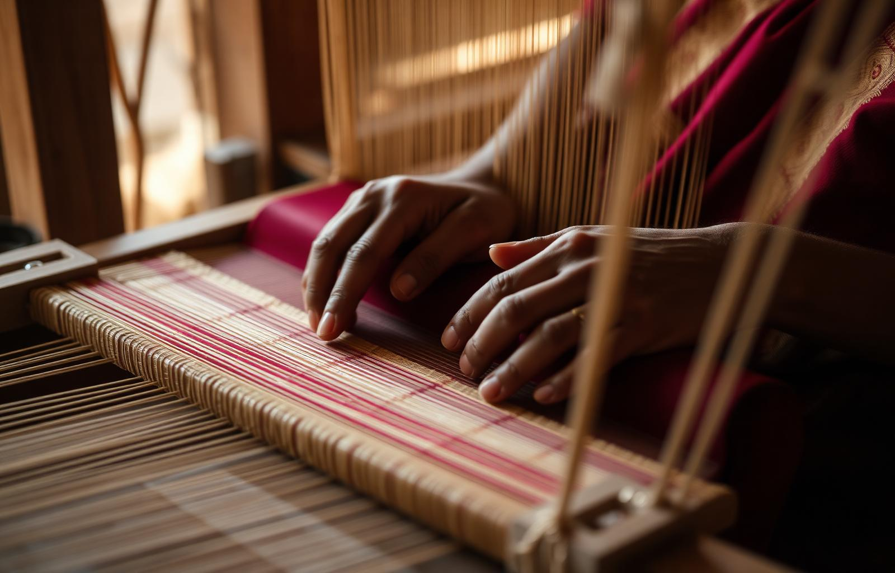

Watch the loom in motion
A Family Story
From my father's loom to your wardrobe.
Sri Aishwarya Sarees began in 1972 when our father set out across Tamil Nadu, Andhra and Karnataka, sitting with weavers, choosing yarn, and learning the rhythm of every loom. He believed a saree was never just a garment — it was a memory in the making.
Three generations later, the same families weave for us. The same care goes into every fold. From our boutiques in T.Nagar and Adyar to homes across the world, every saree carries a quiet promise of patience, of authenticity, and of the hands that made it.
— The Sri Aishwarya FamilyChennai · Three Generations of Handloom